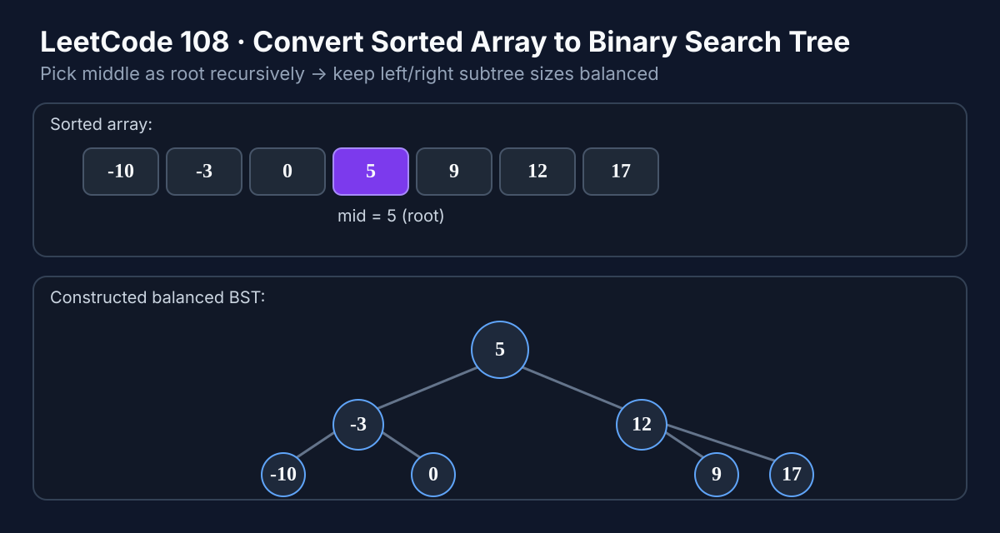

LeetCode 108: Convert Sorted Array to Binary Search Tree (Middle-as-Root Divide & Conquer)
LeetCode 108Binary TreeBSTDivide and ConquerToday we solve LeetCode 108 - Convert Sorted Array to Binary Search Tree. The core trick is simple: always pick the middle element as the root so the tree stays height-balanced.
Source: https://leetcode.com/problems/convert-sorted-array-to-binary-search-tree/

English
Problem Summary
Given an integer array nums sorted in ascending order, convert it to a height-balanced BST.
Key Insight
In a balanced BST, root should split values into two nearly equal halves. So for each subarray, use the middle index as root, build left subtree from left half, and right subtree from right half.
Optimal Algorithm (Recursive Divide & Conquer)
1) Define function build(l, r) to build BST from nums[l..r].
2) If l > r, return null.
3) mid = l + (r - l) / 2.
4) Create node with nums[mid].
5) Recursively set left child with build(l, mid - 1), right child with build(mid + 1, r).
6) Return node.
Complexity Analysis
Time: O(n) — each array element becomes exactly one tree node.
Space: O(log n) average recursion depth (balanced splits).
Common Pitfalls
- Using wrong boundary condition (l >= r) and skipping single-element nodes.
- Mid computation or recursion ranges off by one.
- Forgetting to return null when interval is invalid.
Reference Implementations (Java / Go / C++ / Python / JavaScript)
class Solution {
public TreeNode sortedArrayToBST(int[] nums) {
return build(nums, 0, nums.length - 1);
}
private TreeNode build(int[] nums, int l, int r) {
if (l > r) return null;
int mid = l + (r - l) / 2;
TreeNode root = new TreeNode(nums[mid]);
root.left = build(nums, l, mid - 1);
root.right = build(nums, mid + 1, r);
return root;
}
}func sortedArrayToBST(nums []int) *TreeNode {
var build func(int, int) *TreeNode
build = func(l, r int) *TreeNode {
if l > r {
return nil
}
mid := l + (r-l)/2
root := &TreeNode{Val: nums[mid]}
root.Left = build(l, mid-1)
root.Right = build(mid+1, r)
return root
}
return build(0, len(nums)-1)
}class Solution {
public:
TreeNode* sortedArrayToBST(vector& nums) {
return build(nums, 0, (int)nums.size() - 1);
}
TreeNode* build(vector& nums, int l, int r) {
if (l > r) return nullptr;
int mid = l + (r - l) / 2;
TreeNode* root = new TreeNode(nums[mid]);
root->left = build(nums, l, mid - 1);
root->right = build(nums, mid + 1, r);
return root;
}
}; class Solution:
def sortedArrayToBST(self, nums: List[int]) -> Optional[TreeNode]:
def build(l: int, r: int) -> Optional[TreeNode]:
if l > r:
return None
mid = l + (r - l) // 2
root = TreeNode(nums[mid])
root.left = build(l, mid - 1)
root.right = build(mid + 1, r)
return root
return build(0, len(nums) - 1)/**
* @param {number[]} nums
* @return {TreeNode}
*/
var sortedArrayToBST = function(nums) {
const build = (l, r) => {
if (l > r) return null;
const mid = l + Math.floor((r - l) / 2);
const root = new TreeNode(nums[mid]);
root.left = build(l, mid - 1);
root.right = build(mid + 1, r);
return root;
};
return build(0, nums.length - 1);
};中文
题目概述
给定一个升序数组 nums，要求构造一棵高度平衡的二叉搜索树（BST）。
核心思路
每一段区间都取中点作为根节点，这样左半边都比根小、右半边都比根大，同时两侧规模接近，从而保持平衡。
最优算法（递归分治）
1）定义 build(l, r) 表示用 nums[l..r] 建树。
2）若 l > r，返回 null。
3）取中点 mid = l + (r - l) / 2。
4）创建根节点值 nums[mid]。
5）左子树递归 build(l, mid - 1)，右子树递归 build(mid + 1, r)。
6）返回根节点。
复杂度分析
时间复杂度：O(n)，每个元素只会建一次节点。
空间复杂度：O(log n)，递归深度为平衡树高度。
常见陷阱
- 终止条件写错导致单元素区间丢失。
- 递归边界写成 build(l, mid) / build(mid, r) 导致死循环。
- 忘记空区间返回 null。
多语言参考实现（Java / Go / C++ / Python / JavaScript）
class Solution {
public TreeNode sortedArrayToBST(int[] nums) {
return build(nums, 0, nums.length - 1);
}
private TreeNode build(int[] nums, int l, int r) {
if (l > r) return null;
int mid = l + (r - l) / 2;
TreeNode root = new TreeNode(nums[mid]);
root.left = build(nums, l, mid - 1);
root.right = build(nums, mid + 1, r);
return root;
}
}func sortedArrayToBST(nums []int) *TreeNode {
var build func(int, int) *TreeNode
build = func(l, r int) *TreeNode {
if l > r {
return nil
}
mid := l + (r-l)/2
root := &TreeNode{Val: nums[mid]}
root.Left = build(l, mid-1)
root.Right = build(mid+1, r)
return root
}
return build(0, len(nums)-1)
}class Solution {
public:
TreeNode* sortedArrayToBST(vector& nums) {
return build(nums, 0, (int)nums.size() - 1);
}
TreeNode* build(vector& nums, int l, int r) {
if (l > r) return nullptr;
int mid = l + (r - l) / 2;
TreeNode* root = new TreeNode(nums[mid]);
root->left = build(nums, l, mid - 1);
root->right = build(nums, mid + 1, r);
return root;
}
}; class Solution:
def sortedArrayToBST(self, nums: List[int]) -> Optional[TreeNode]:
def build(l: int, r: int) -> Optional[TreeNode]:
if l > r:
return None
mid = l + (r - l) // 2
root = TreeNode(nums[mid])
root.left = build(l, mid - 1)
root.right = build(mid + 1, r)
return root
return build(0, len(nums) - 1)/**
* @param {number[]} nums
* @return {TreeNode}
*/
var sortedArrayToBST = function(nums) {
const build = (l, r) => {
if (l > r) return null;
const mid = l + Math.floor((r - l) / 2);
const root = new TreeNode(nums[mid]);
root.left = build(l, mid - 1);
root.right = build(mid + 1, r);
return root;
};
return build(0, nums.length - 1);
};
Comments